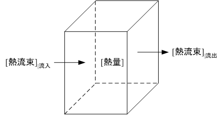

広告
対流伝熱

対流によって流入・流出する熱流量Qin, Qout[J/s]は、次式で表されます。
流入
\[
\begin{aligned}
Q_{in}
&=C_p(F_xT|_x+F_yT|_y+F_zT|_z)\\
&=C_p\left(\rho\Delta y\Delta z\,v_xT|_x+\rho\Delta z\Delta x\,v_yT|_y+\rho\Delta x\Delta y\,v_zT|_z\right)\\
&=\rho C_p\left(\Delta y\Delta z\,v_xT|_x+\Delta z\Delta x\,v_yT|_y+\Delta x\Delta y\,v_zT|_z\right)
\end{aligned}
\]
流出
\[
\begin{aligned}
Q_{out}
&=-C_p(F_xT|_{x+\Delta x}+F_yT|_{y+\Delta y}+F_zT|_{z+\Delta z})\\
&=-C_p\left(\rho\Delta y\Delta z\,v_xT|_{x+\Delta x}+\rho\Delta z\Delta x\,v_yT|_{y+\Delta y}+\rho\Delta x\Delta y\,v_zT|_{z+\Delta z}\right)\\
&=-\rho C_p\left(\Delta y\Delta z\,v_xT|_{x+\Delta x}+\Delta z\Delta x\,v_yT|_{y+\Delta y}+\Delta x\Delta y\,v_zT|_{z+\Delta z}\right)
\end{aligned}
\]
ここで、Fx, Fy, Fz[kg/s]は、 それぞれx, y, z軸方向の質量流量を表しています。
| prev | | | top | | | next |